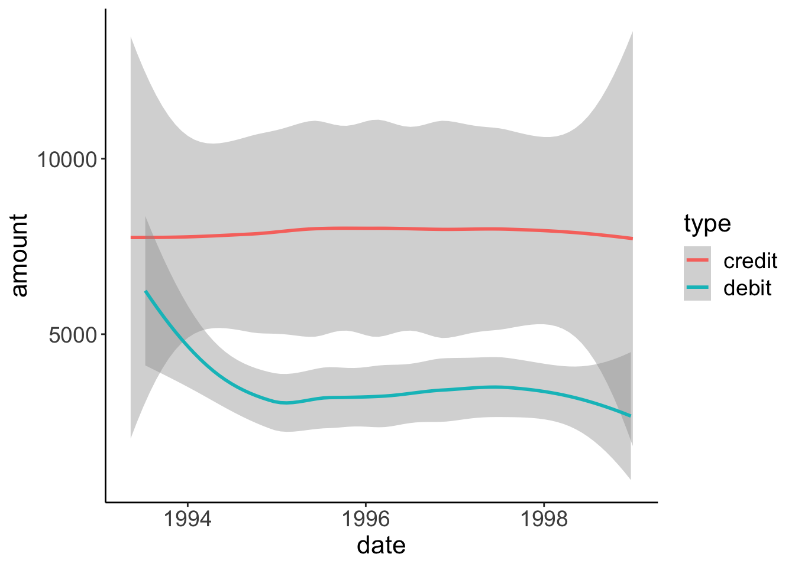
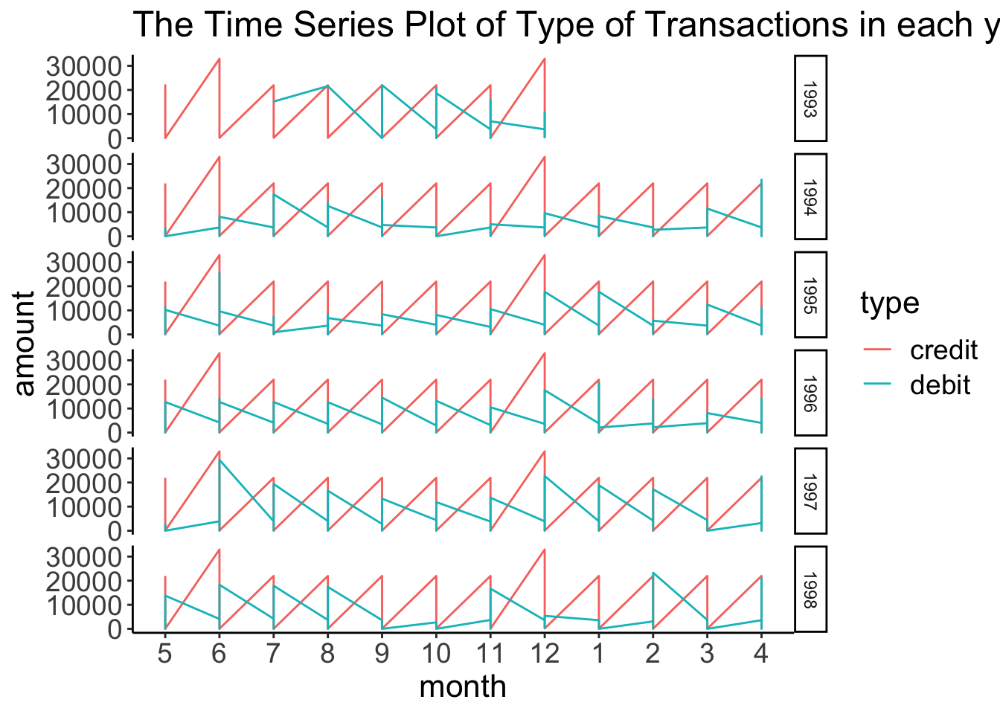
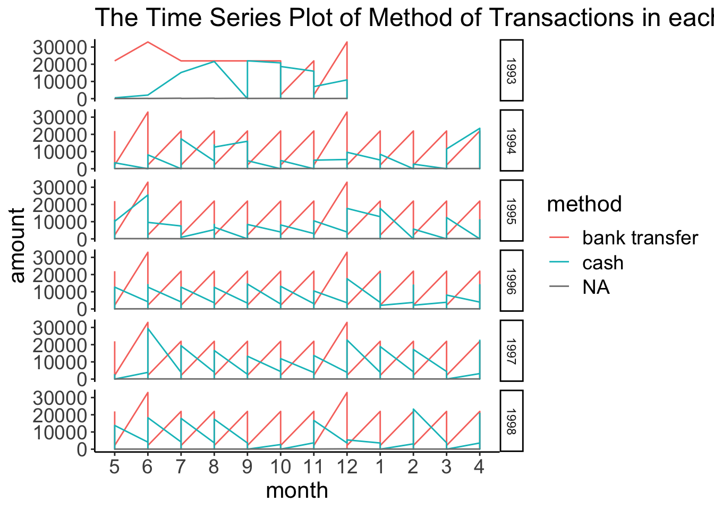
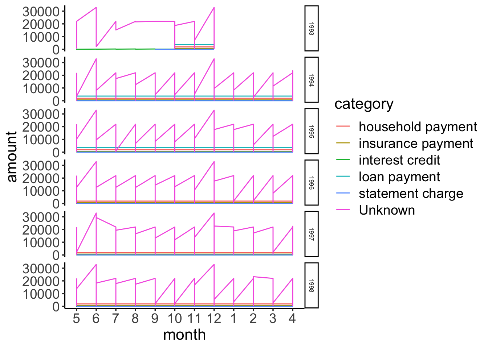
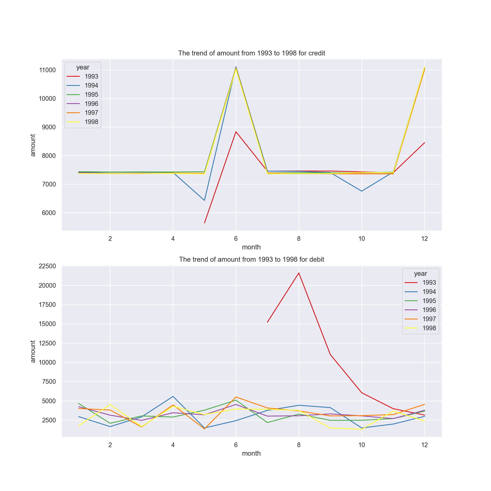
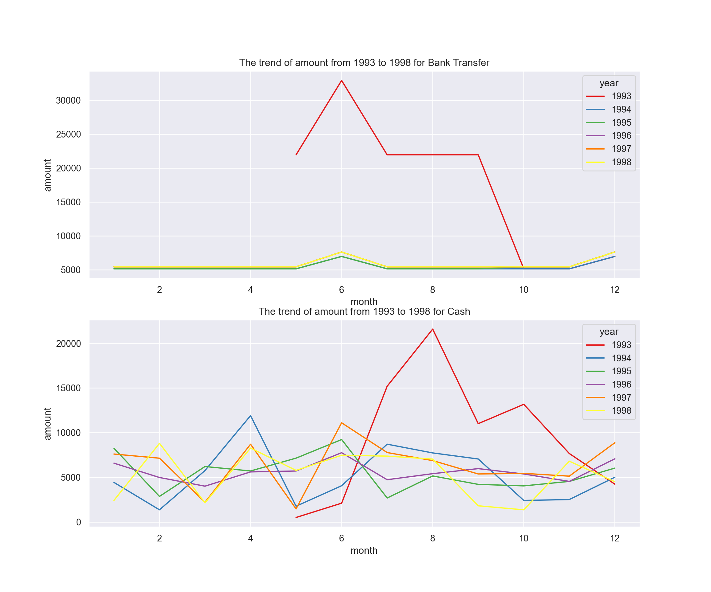
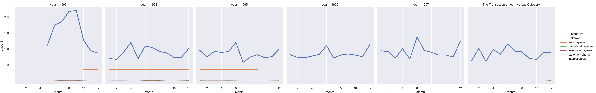

transactions = read.csv('./data/transactions.csv')
accounts = read.csv('./data/accounts_analytical.csv')# filter the dataset to find the highest transaction amount
account_id = transactions %>% group_by(account_id) %>% mutate(cnt = n()) %>% ungroup %>% filter(cnt == max(cnt))
#account_id##Plot One: Smooth Line by year
# plot the amount by smooth line
account_id$date = ymd(account_id$date)
account_id %>% group_by('date') %>%
ggplot(aes(x=date,y=amount,group=type,color=type))+
geom_smooth()## `geom_smooth()` using method = 'loess' and formula 'y ~ x'
##Plot Two:Different Type of transaction in different year
# to plot the time series of transaction in credit and debit
account_id['year'] = year(account_id$date)
account_id['month'] = month(account_id$date)
account_id['month'] = factor(account_id$month, levels = unique(account_id$month))
ggplot(account_id,aes(x=month,y=amount,group=type,color=type)) +
facet_grid(year~.) +
geom_line() +
ggtitle('The Time Series Plot of Type of Transactions in each year')
account_id$method[grepl("^ *$",account_id$method)] <- NA
ggplot(account_id,aes(x=month,y=amount,group=method,color=method)) +
facet_grid(year~.,space = "free") +
geom_line(na.rm=TRUE) +
ggtitle('The Time Series Plot of Method of Transactions in each year')
account_id$category[account_id$category == "" ] <- 'Unknown'
ggplot(account_id,aes(x=month,y=amount,group=category,color=category)) +
facet_grid(year~.,space = "free") +
geom_line() +
theme(text = element_text(size = 8), element_line(size = 0.6))
ggtitle('The Time Series Plot of Method of Transactions in each year')## $title
## [1] "The Time Series Plot of Method of Transactions in each year"
##
## attr(,"class")
## [1] "labels"For the last plot, we can find the household payment, insurance payment, loan payment, intest credit, and statement charge all have frequency, and the transaction amount is constant.
for the first and the second plot, when time is close to the end of month, the amount will increase.
import pandas as pd
import matplotlib.pyplot as plt
import seaborn as sns
import datetime as dttransactions = pd.read_csv('./data/transactions.csv')## sys:1: DtypeWarning: Columns (6) have mixed types.Specify dtype option on import or set low_memory=False.accounts = pd.read_csv('./data/accounts_analytical.csv')# group the dataset by account_id
account_id = transactions.groupby('account_id').count().reset_index()[['account_id','id']].sort_values(ascending=False,by='id')['account_id'].reset_index()
account_df = transactions[transactions['account_id'] == account_id['account_id'][0]]
#account_df# find the trend in each year
# parse the date
account_df['year'] = pd.to_datetime(account_df['date']).dt.year## /Users/xuguiming/Library/r-miniconda/envs/r-reticulate/bin/python:1: SettingWithCopyWarning:
## A value is trying to be set on a copy of a slice from a DataFrame.
## Try using .loc[row_indexer,col_indexer] = value instead
##
## See the caveats in the documentation: https://pandas.pydata.org/pandas-docs/stable/user_guide/indexing.html#returning-a-view-versus-a-copyaccount_df['month'] = pd.to_datetime(account_df['date']).dt.month
f,ax = plt.subplots(2,1,figsize=(12,12))
sns.lineplot(x='month',y='amount',hue='year',data=account_df[account_df['type']=='credit'],ci=None,ax=ax[0],palette='Set1')
ax[0].set_title('The trend of amount from 1993 to 1998 for credit')
sns.lineplot(x='month',y='amount',hue='year',data=account_df[account_df['type']=='debit'],ci=None,ax=ax[1],palette='Set1')
ax[1].set_title('The trend of amount from 1993 to 1998 for debit')
f,ax = plt.subplots(2,1,figsize=(12,10))
sns.lineplot(x='month',y='amount',hue='year',data=account_df[account_df['method']=='bank transfer'],ci=None,ax=ax[0],palette='Set1')
ax[0].set_title('The trend of amount from 1993 to 1998 for Bank Transfer')
sns.lineplot(x='month',y='amount',hue='year',data=account_df[account_df['method']=='cash'],ci=None,ax=ax[1],palette='Set1')
ax[1].set_title('The trend of amount from 1993 to 1998 for Cash')
f,ax = plt.subplots(12,5)
account_df['category'].fillna('Unknown',inplace=True)## /Users/xuguiming/Library/r-miniconda/envs/r-reticulate/lib/python3.6/site-packages/pandas/core/series.py:4523: SettingWithCopyWarning:
## A value is trying to be set on a copy of a slice from a DataFrame
##
## See the caveats in the documentation: https://pandas.pydata.org/pandas-docs/stable/user_guide/indexing.html#returning-a-view-versus-a-copy
## downcast=downcast,sns.relplot(x='month',y='amount',col='year',hue='category',data=account_df,size='category',ci=None,kind='line')## <seaborn.axisgrid.FacetGrid object at 0x7f8e893aba90>plt.title('The Transaction amount versus Category')
The Conclusion is the same as R version.